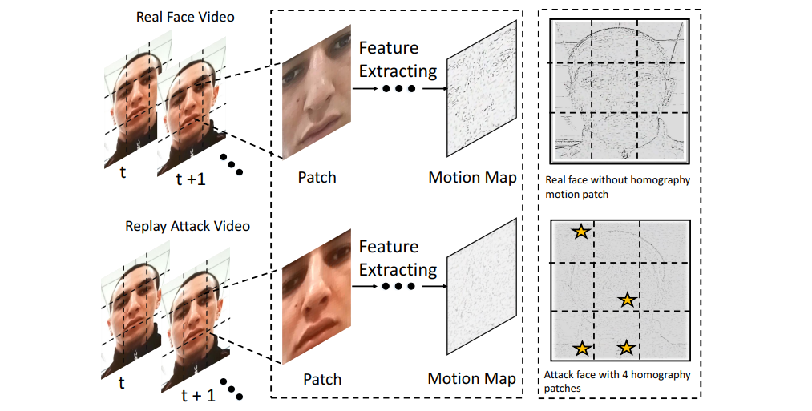
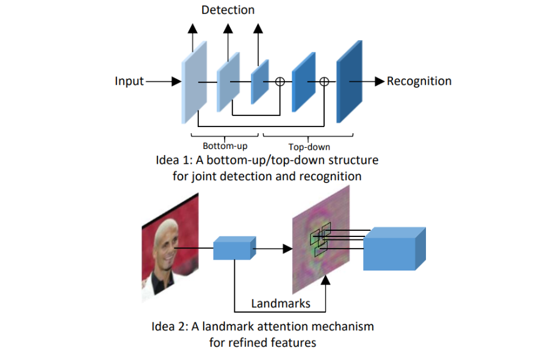

Publications



Live Face Verification with Multiple Instantialized Local Homographic Parameterization.
Chen Lin, Zhouyingcheng Liao, Peng Zhou, Jianguo Hu, Bingbing Ni
IJCAI 2018
[paper]

Uniface: A Unified Network for Face Detection and Recognition
Zhouyingcheng Liao, Peng Zhou, Qinlong Wu, Bingbing Ni
ICPR 2018
[paper]